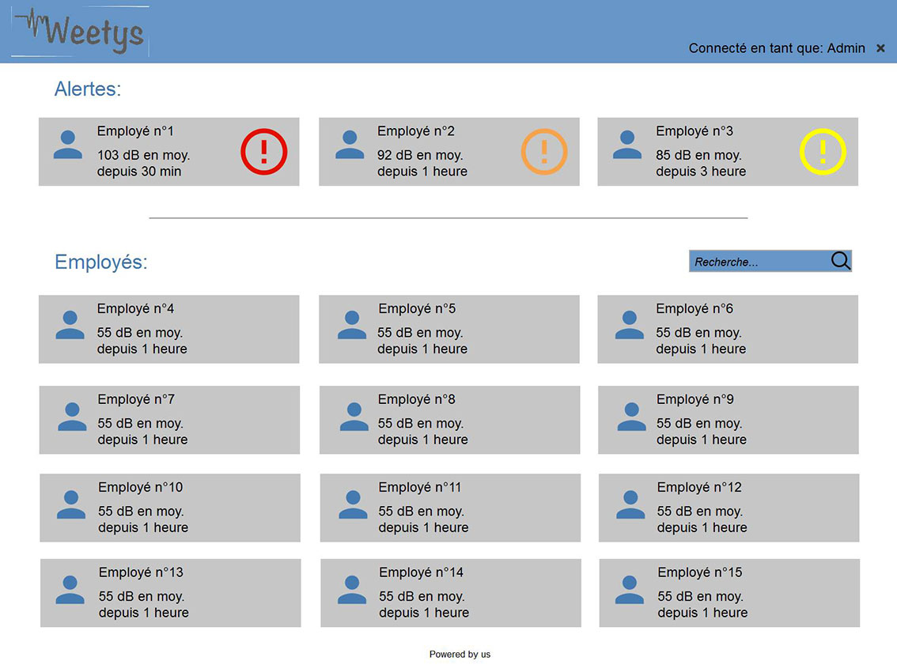

Des oreilles malmenées au quotidien…
Bob, 43 ans travaille dans une usine très bruyante. Chaque soir, il rentre du travail fatigué, avec des douleurs aux oreilles. Il ne sait pas que quotidiennement il met en danger sa santé lorsqu’il va au travail. Son employeur quant à lui, remarque que Bob est de moins en moins concentré, productif. Il est dans « sa bulle » et est de plus en plus absent à cause d’arrêts maladies fréquents. Par conséquent, les résultats de l’entreprise chutent, la motivation de ses employés baisse et il y a de plus en plus d’absents. Le directeur de l’usine se rend compte que 42% des travailleurs ont déjà subi une perte auditive dans leurs professions. Bob n’est donc pas le seul dans son cas… C’est ainsi que le directeur se demande : Par quel moyen peut-il corriger ce problème?
… Soignées par notre nouvelle application santé !
C’est alors que le directeur de l’usine découvre... Weetys ! Weetys est la première plateforme en ligne qui permet aux directeurs d’entreprise d’obtenir un compte rendu écrit concernant le niveau d’exposition de décibel de ses employés. Chaque soir, le directeur d’usine peut accéder au compte rendu de chaque employé et ces derniers peuvent également accéder à leur propre profil grâce à un identifiant personnel. Sur cette plateforme, trois couleurs définissent l’intensité d’exposition des employés dans l’usine du moins élevé au plus élevé : Jaune, orange puis rouge. Le directeur ainsi que l’employeur reçoivent alors une alerte si le niveau d’exposition est trop élevé. Tous les jours, quand Bob se rend au travail, il enfile sa tenue de sécurité et met un bracelet connecté. Ce dernier capte le niveau sonore et la durée d’exposition à ces décibels.
Ce qu’il faut retenir :
Qu’est ce l’employeur y gagne ? Les équipes seront plus productives, motivées, et surtout il n’y aura aucun coût engendré par la perte auditive de ses employés. Qu’est ce que Bob y gagne ? Bob est plus épanoui sur son lieu de travail, plus motivé et surtout il protège sa santé. Weetys est alors une nouvelle plateforme innovante, qui peut sauver et préserver la santé de milliers d’employés.